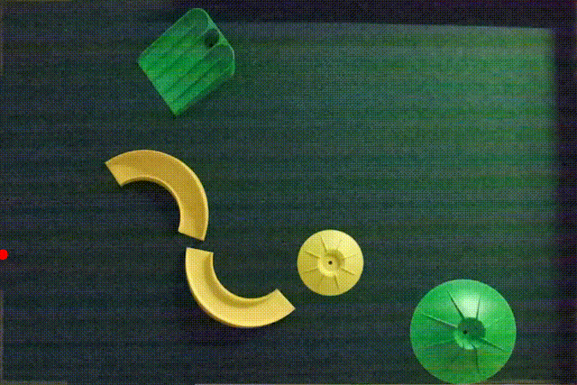

Abstract
Minigolf is an exemplary real-world game for examining embodied intelligence, as it not only challenges spatial and kinodynamic reasoning but also requires reflective and modification capacities to address impractical course designs. We introduce RoboGolf, a framework that combines dual-camera perception and closed-loop control, augmented by a reflective equilibrium loop. The core of both loops is powered by finetuned VLMs. Extensive experiments on challenging given courts and impractical courts demonstrate the effectiveness of our approach.
RoboGolf Handles Diverse Courts
Simple Courts

Medium Courts
Variations of Endpoint Positions
Require precise hitting force to go through the ramp yet not exceed the volcano.
Variations of Endpoint Types
Different endpoints and obstacles require our model to recognize and plan accurately to avoid overshooting or falling short.
Courts with Multiple Feasible Solutions
Identify various feasible solutions, and accurately plan the shot to navigate through obstacles and reach the target efficiently.

Complex Kinodynamic
Hit with precise force and direction to avoid getting stuck, prevent wall hits, force loss.
Hard Courts

Bilateral Golf Balls Impact Challenge
Hit the red ball from the starting point to bump the white ball, initially positioned at the center of the court, into the yellow round endpoint.